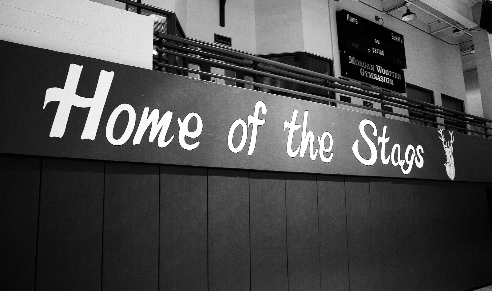
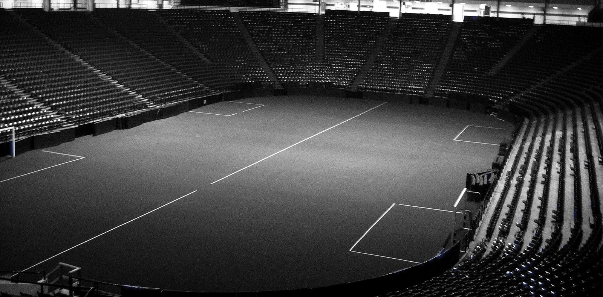

LEW ALCINDOR (LUEGO KAREEM ABDUL-JABBAR) · FOTO DE 1967, YA EN UCLA · NEW YORK WORLD-TELEGRAM AND THE SUN, D. P.
2,18 m

GIMNASIO MORGAN WOOTTEN, DeMATHA (HYATTSVILLE, MARYLAND), 2005 · FOTO: GLENN FITZPATRICK, CC BY 2.5, MODIFICADA
MORGAN WOOTTEN
DeMATHA · ENTRENADOR
DESDE 1956
RAQUETA DE MADERA · RECREACIÓN
MÁS GRANDE
FOTOS: NEW YORK WORLD-TELEGRAM AND THE SUN / BIBLIOTECA DEL CONGRESO (D. P.) · GLENN FITZPATRICK (CC BY 2.5, MODIFICADA) · GREENSTRAT (D. P.), VÍA WIKIMEDIA COMMONS · MARCADOR, RAQUETA, REGLA Y PISTA: RECREACIÓN

COLE FIELD HOUSE, UNIVERSIDAD DE MARYLAND, DONDE SE JUGÓ · FOTO (2007): GREENSTRAT, DOMINIO PÚBLICO